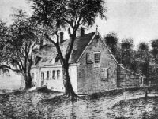
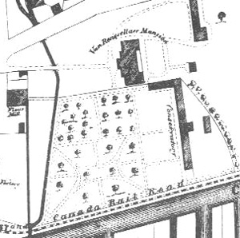
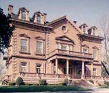

|
Gone since the 1890s, "Van Rensselaer Manor House" remains a legendary local term used to describe the seat of Rensselaerswyck Manor. But for more than two centuries, a Van Rensselaer family headquarters was located on the premises - the flats along the Hudson, east of the river road, and about a mile north of the center of the city of Albany. An early Van Rensselaer farm on that site was destroyed by a flood in 1666. Shortly thereafter, Jeremias Van Rensselaer erected a more enduring structure  near where Patroon's Creek flowed into the Hudson River. Although "Patroon" Jeremias lived only until 1674, that building served as the family's country seat until the end of the Seven Years War. It was built "country style" with the entrance on the long side and with outbuildings attached. Although superseded by a more elaborate manor house, that brick building stood until torn down in 1839. In 1765, Patroon Stephen Van Rensselaer II erected a new manor house on the property. It was a large brick structure - almost forty-six feet deep with a gambrel roof and pedimented dormers. The central entrance on the south side opened into a great hallway. He died in 1769 before he could enjoy its grandeur. His widow lived there with all her children until the heir to the Manor came of age in the 1780s. Stephen Van Rensselaer III lived at the mansion for many years and further enlarged the building - adding octagonal wings in 1820. In colonial times, the Manor House was the centerpoint and principal landmark of an Albany County town called the "West Manor." But during the 1770s, its location was often given as Watervliet - officially designated as a town in 1788. However, the Van Rensselaers owned much of the land and seem to have enjoyed a great deal of freedom in orchestrating its development. In 1815, the land surrounding the manor house was annexed to the city of Albany. Robert Dunbar was the patroon's business agent until he retired in 1835 and was succeeded by his nephew, Casparus F. Pruyn, who had worked for Dunbar for many years. During the 1840s, the building was extensively remodeled by Stephen Van Rensselaer IV who lived there until his death in 1868. In 1857, historian Benson Lossing described the Van Rensselaer property. By the 1870s, the property was abandoned by a Van Rensselaer family that now found the surrounding factories, railroads, and canal less conducive to manorial living than in days past. Imperiled by an expanding railroad, family members sought to have the entire building relocated. Unable to have the structure designated as the "New York State Building" at the Columbian Exposition, in 1895, the mansion was dismantled and partially reassembled on the campus of Williams College in Massachusetts. As "Van Rensselaer Hall," it served as a fraternity house and in other capacities until 1973 when it was demolished! The basic source for this exposition is Paul R. Huey's chapter in Albany Architecture, pp. 30-31, 49-50. See also, Marcus T. Reynolds, "The Colonial Buildings of Rensselaerwyck," in The Architectural Record IV (July 1894-July 1895), p. 416f.
Adaptation and compression (image compressed) of Anne Marguerite Hyde de Neuville's water level painting as reproduced in Wiki Gallery. The artist came to the United States in 1807 and created a number of paintings of historic locations in upstate New York. This image dated "1807" is included here as it most closely resembled the Van Rensselaer country seat during the era of the American Revolution. In 1807, it would have been the home of Stephen Van Rensselaer III.
This drawing was made by Albany artist Francis Pruyn just before the building was razed in 1839. It is in the collection of the Albany Institute of History and Art.
Detail from a print of the Dripps Map of Albany dated 1857 plotting the Manor House complex as it existed almost twenty years following the death of the last Patroon. Poor quality print copy filed in the CASHP Graphics Archive.
Some of the stones were returned to the Albany area. Previously, some of the interior parts were donated to the Metropolitan Museum of Art.
first posted 09/05/01; last revised 1/17/14 |